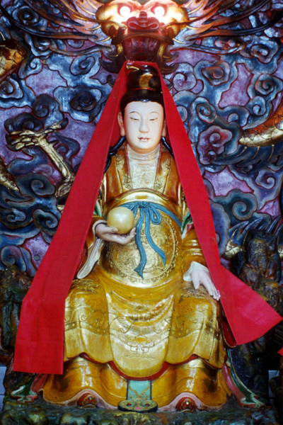

太 陰 星 君
太陰星君，即月神，又稱「夜明之神」，俗稱「太陰娘娘」或「月宮娘娘」，民間簡稱「月娘」。
月亮與太陽、星辰等，同為初民明確之天體崇拜對象。月亮於太陽西沉後東昇，為人類來光明；而其陰晴圓缺之變化，亦令人驚異。古人以月神為陰精，而配太陽 之德，繼太陽之大明，而有夜明之光。太陽為「大明之神」，月亮則為「夜明之神」，同列古代之祀典。相傳「帝嚳高帝氏歷日月而迎送之」； 《尚書．舜典》中有「煙于六宗」之說，「六宗」乃日、月、星三「天宗」與河、海、岱三「地宗」之謂 。西周以降，歷代帝王於春分日祭日，而於秋分日祭月。直至清代，歷代國家祀典中有專門祭月之儀式，稱「夕月禮」。明清時代之北京西郊月壇，即帝王祭月之 所。
月神原為自然神祇，然中國民間則視嫦娥為月神。嫦娥 一作「常娥」，原作「常儀」、「常羲」或「姮娥」，本為帝嚳之妃子， 《世本．帝系篇》載：『帝嚳卜其四紀之子，皆有天下 。下妃娵訾氏之女曰常儀，生摯。 』《山海經．大荒西經》云：『有女子方浴月 。帝 俊妻常羲。生月十有二，此始浴之。 』帝俊即帝嚳，常羲即常儀 。常儀為帝嚳之妻，乃嫦娥身分來歷之本原，神話中謂其生十二個月亮女兒，常於西方荒野為她們洗澡。此一神話與月有關，其後演變為「嫦娥奔月」，其身分由帝 俊之妻，一變為帝俊屬臣后羿之妻，而為月神。
「嫦娥奔 月」乃千古流傳之民間故事。 《初學記》引古本《淮南子》云：『羿請不死之藥于西王母，姮娥竊以奔月，托身於月，是為蟾蜍，而為月精 。 』此一神話又衍化「嫦娥島藥」，謂嫦娥竊藥奔月，化為蟾蜍，於月中任搗藥事，李商隱＜寄遠＞詩云：『嫦娥搗藥無窮已，玉女投壺未肯休 。 』李商隱＜嫦娥＞詩又云：『雲母屏風燭影深，長河漸落曉星沉 。嫦娥應悔偷靈藥，碧海青天夜夜心。 』嫦娥奔月後，其心境之落莫，益增故事之淒美 。
太陰星君為女神，拜月多由婦女主祭。民間或以月神能主宰人間婚姻，媒人之稱「月下老人」，即源於月神信仰；中秋「送瓜求子」之風俗，亦屬月神信仰之延伸。臺灣民間又傳說，小孩營養不良或多疾者，可向太陰星君祈禱。
民間以 農曆八月十五日 為太陰星君之誕辰。是夜月光分外明，入夜以後，面對當空皓月，排香案、點紅燭、供四?，焚香膜拜，此為民間祭月神之習俗。中秋賞月，自古以來蔚為風尚，宋代正式訂為「中秋節」，而有一系列之祭月活動，衍為中國人重要之全民節日。
太陰星君真經
太陰星君寶誥
志心皈命禮 (三稱)
廣寒至聖﹐紫光上真﹐主北極之陰。關﹐掌人身之魄體﹐明分長短﹐致吉兇有缺有圓﹐顯示災祥﹐降禍福無差無忒﹐巡遊不住﹐月碧亙古常明﹐輝燿 無邊﹐素魂普施大化﹐凡承運照﹐實荷生成﹐大悲大願﹐大聖大慈﹐月宮太陰皇君普照大天尊。
太陰星君聖經 (朝日靜夜誦念七遍求則得之)
太陰菩薩向東來﹐十重地獄九重開﹐十萬八千諸菩薩﹐
諸佛菩薩二邊排﹐諸尊佛敬無雲地﹐出水蓮花滿地開﹐
頭帶七層珠寶塔﹐娑婆世界眼光明﹐一佛報管天地恩﹐
二佛報答父母恩﹐在生父母增福壽﹐過世父母早超昇﹐
南摩佛﹐南摩法﹐南摩阿彌陀佛﹐天羅神﹐地羅神﹐
人離難﹐難離身﹐一切災殃化為塵﹐有人念得七遍太陰經﹐
生死不踏地獄門。
回 首 頁｜下 一 頁 |